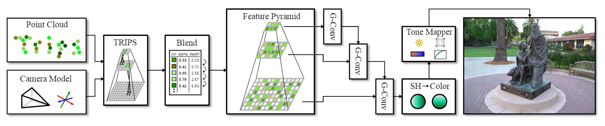
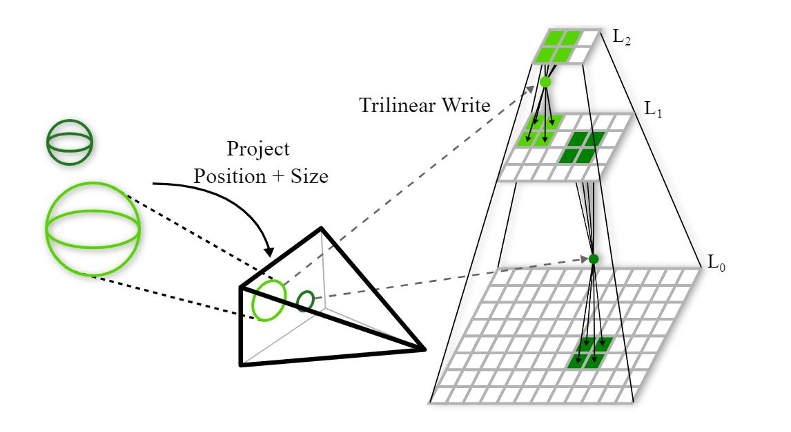

TRIPS: Trilinear Point Splatting for Real-Time Radiance Field Rendering Eurographics 2024 (Computer Graphics Forum)
-
Linus Franke
FAU Erlangen-Nürnberg
-
Darius Rückert
FAU Erlangen-Nürnberg
Voxray GmbH -
Laura Fink
FAU Erlangen-Nürnberg
Fraunhofer IIS -
Marc Stamminger
FAU Erlangen-Nürnberg
Abstract
Point-based radiance field rendering has demonstrated impressive results for novel view synthesis, offering a compelling blend of rendering quality and computational efficiency. However, also latest approaches in this domain are not without their shortcomings. 3D Gaussian Splatting [Kerbl and Kopanas et al. 2023] struggles when tasked with rendering highly detailed scenes, due to blurring and cloudy artifacts. On the other hand, ADOP [Rückert et al. 2022] can accommodate crisper images, but the neural reconstruction network decreases performance, it grapples with temporal instability and it is unable to effectively address large gaps in the point cloud.
In this paper, we present TRIPS (Trilinear Point Splatting), an approach that combines ideas from both Gaussian Splatting and ADOP. The fundamental concept behind our novel technique involves rasterizing points into a screen-space image pyramid, with the selection of the pyramid layer determined by the projected point size. This approach allows rendering arbitrarily large points using a single trilinear write. A lightweight neural network is then used to reconstruct a hole-free image including detail beyond splat resolution. Importantly, our render pipeline is entirely differentiable, allowing for automatic optimization of both point sizes and positions.
Our evaluation demonstrate that TRIPS surpasses existing state-of-the-art methods in terms of rendering quality while maintaining a real-time frame rate of 60 frames per second on readily available hardware. This performance extends to challenging scenarios, such as scenes featuring intricate geometry, expansive landscapes, and auto-exposed footage.
Pipeline
Overview of our rendering pipeline.
Figure 1: Our pipeline: TRIPS renders a point cloud trilinearly as 2x2x2 splats into multi-layered feature maps with the results being
passed though our small neural network, containing only a single gated convolution per layer. This pipeline is completely differentiable, so
that point descriptors (colors) and positions, as well as camera parameters are optimized via gradient descent.

Figure 2: Trilinear Point Splatting: (left) all points and their respective size are projected into the target image. Based on this screen space size, each point is written to the correct layer of the image pyramid using a trilinear write (right). Large points are written to layers of lower resolution and therefore cover more space in the final image.
Result: Comparison to 3D Gaussian Splatting
Left: 3D Gaussian Splatting (3D GS) [Kerbl and Kopanas 2023] and right: TRIPS (ours).TRIPS is able to reconstruct fine details well, such as the grass or the chains of the swing. Furthermore, less floaters are present in ours.
Playground [Knapitsch 2017]
Result: Comparison to ADOP
Left: ADOP [Rückert 2022] and right: TRIPS (ours). Ours provides better temporal stability than ADOP due to a linear interpolation of points instead of round-to-next-pixel rasterization.Boat [Rückert 2022]
Results: Side-by-sides
Left: ADOP [Rückert 2022] or MipNeRF-360 [Barron 2022],Center left: 3D Gaussian Splatting (3D GS) [Kerbl and Kopanas 2023],
Center right: TRIPS (ours),
Right: Ground truth (removed from all training sets)
Bicycle [Barron 2022]
Train [Knapitsch 2017]
Francis [Knapitsch 2017]
Stump [Barron 2022]
Boat [Rückert 2022]
Citation
Acknowledgements
Linus Franke was supported by the Bayerische Forschungsstiftung (Bavarian Research Foundation) AZ-1422-20. The authors gratefully acknowledge the scientific support and HPC resources provided by the Erlangen National High Performance Computing Center (NHR@FAU) of the Friedrich-Alexander-Universität Erlangen-Nürnberg (FAU) under the NHR project b162dc. NHR funding is provided by federal and Bavarian state authorities. NHR@FAU hardware is partially funded by the German Research Foundation (DFG) – 440719683.The website template was adapted from Zip-NeRF, who borrowed from Michaël Gharbi and Ref-NeRF. Image sliders are from BakedSDF.
References
[Kerbl and Kopanas 2023] Kerbl, B., Kopanas, G., Leimkühler, T., and Drettakis, G. 2023. "3D Gaussian splatting for real-time radiance field rendering". ACM Transactions on Graphics (ToG), 42(4).
[Rückert 2022] Rückert, D., Franke, L., and Stamminger, M., 2022. "Adop: Approximate differentiable one-pixel point rendering." ACM Transactions on Graphics (ToG) 41.4 (2022): 1-14.
[Barron 2022] Barron, J., Mildenhall, B., Verbin, D., Srinivasan, P. and Hedman, P., 2022. "Mip-nerf 360: Unbounded anti-aliased neural radiance fields." Proceedings of the IEEE/CVF Conference on Computer Vision and Pattern Recognition. 2022.
[Knapitsch 2017] Knapitsch, A., Park, J., Zhou, Q. and Koltun, V., 2017 "Tanks and temples: Benchmarking large-scale scene reconstruction." ACM Transactions on Graphics (ToG) 36.4 (2017): 1-13.